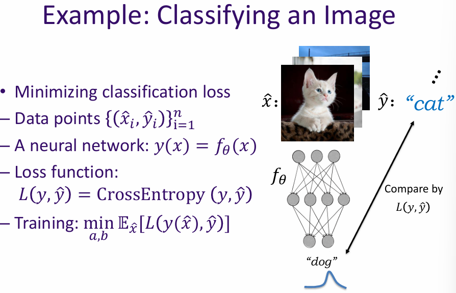
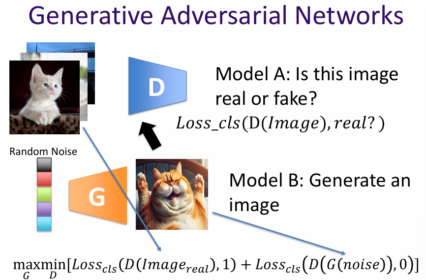
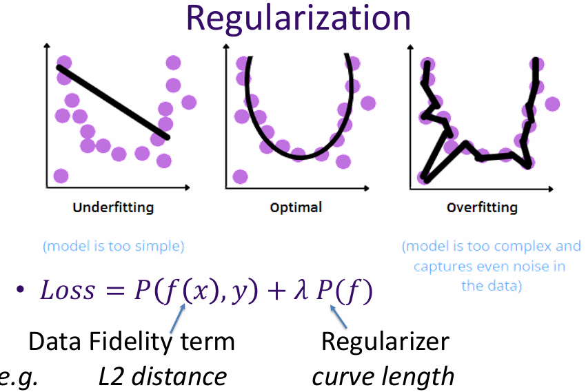
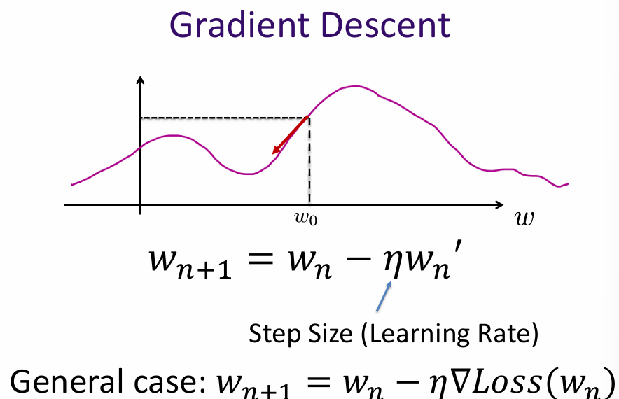
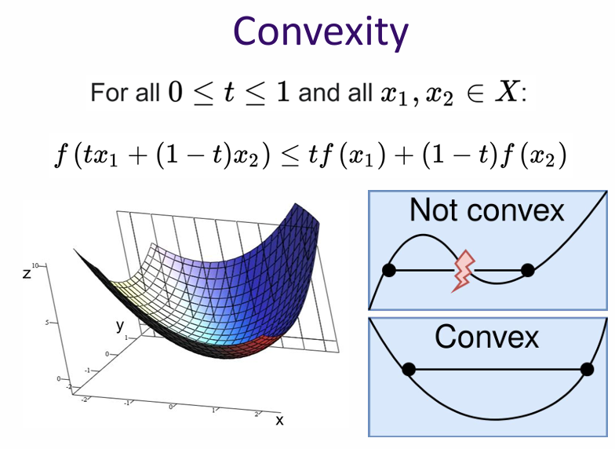

Date Taken: Fall 2025
Status: Work in Progress
Reference: LSU Professor Dong Lao, ChatGBT
Optimization is the process of making something as effective or functional as possible. In the context of artificial intelligence and machine learning, optimization typically refers to the adjustment of parameters within a model to minimize errors and improve performance.
Example: Road trip, I want to find the optimal driving speed, which minimizes travel time while considering fuel efficiency. Driving speed is the parameter being optimized and fuel cost is the objective function being minimized.
Cost(loss) function is used to measure how well a model is performing. The goal of optimization is to minimize this cost function. \[ \min_{\text{speed}} \; \text{fuel}(\text{speed}, \text{car}, \text{route}, \text{etc.}) \]
Model and model parameters. Loss functions can be weighted and combined, if I want to minimize fuel cost while not spending too much time driving: \[ \min_{\text{speed}} \; \text{fuel}\big[\text{car}(\text{speed})\big] + \lambda \, \text{time}(\text{speed}) \] where \( \lambda \) (Hyperparameter) is a weighting factor that balances the trade-off between fuel cost and travel time.
What are we optimizing? A "cost (loss) function" associated with the AI's goal. The lower the cost function, the better the AI performs

Generative Adversarial Networks (GANs) are a class of machine learning frameworks designed to generate new data samples that resemble a given training dataset. They consist of two neural networks, the generator and the discriminator, which are trained simultaneously through a process of adversarial learning.
The generator network creates new data samples, while the discriminator network evaluates them against real data samples from the training set. The goal of the generator is to produce samples that are indistinguishable from real data, while the discriminator aims to correctly identify whether a sample is real or generated.
During training, the generator and discriminator engage in a continuous feedback loop. The generator improves its ability to create realistic samples based on the discriminator's evaluations, while the discriminator enhances its ability to distinguish between real and generated data. This adversarial process continues until the generator produces samples that are sufficiently realistic, making it difficult for the discriminator to differentiate between real and generated data.

Given a function, how do we find its minima? Explicit and Iterative.
In machine learning, iterative methods like gradient descent are commonly used due to the complexity of models and high-dimensional parameter spaces.
Question: Coin toss, the probability of getting head is θ. In 100 independent trials, we get 63 heads and 37 tails. What is the most likely value of θ?
Loss function: negative likelihood: \[ L(\theta; x_1, \ldots, x_{100}) = -P_\theta(x_1, \ldots, x_{100}) = -P_\theta(x_1) P_\theta(x_2) \cdots P_\theta(x_{100}) = -\theta^{63} (1-\theta)^{37} \]
We want to find the MLE: \[ \hat{\theta} = \arg\min_{\theta} L(\theta) \]
Given: \[ L(\theta) = -\theta^{63}(1 - \theta)^{37} \] Compute the derivative: \[ \frac{dL}{d\theta} = -63\,\theta^{62}(1 - \theta)^{37} + 37\,\theta^{63}(1 - \theta)^{36} = [-63(1 - \theta) + 37\theta] \cdot \theta^{62}(1 - \theta)^{36} = 0 \] or Taking the log-likelihood: \[ \ell(\theta) = \log L(\theta) = 63 \log \theta + 37 \log (1 - \theta) \] \[ \frac{d\ell}{d\theta} = \frac{63}{\theta} - \frac{37}{1 - \theta} = 0 \] \[ 63(1 - \theta) = 37\theta \quad \Rightarrow \quad 100\theta = 63 \quad \Rightarrow \quad \hat{\theta} = 0.63 \] \[ \hat{\theta} = 0, \; 1, \; \text{or} \; 0.63 \] \[ L(0) = 0, \quad L(1) = 0, \quad L(0.63) > 0 \] Thus, the MLE is: \[ \boxed{\hat{\theta} = 0, 1, \text{ and } 0.63} \]
We have observed data points \((\hat{x}_i, \hat{y}_i)\) for \(i = 1, \ldots, n\).
Assume a linear model: \[ y(x) = a x + b \] and observations: \[ \hat{y}_i = y(\hat{x}_i) + n(\hat{x}_i) \] where \(n(\hat{x}_i)\) are i.i.d. zero-mean Gaussian random variables.
Find parameters \(a, b\) that maximize the likelihood of the data given the model \(y(x)\).
The noise probability density is given by the Gaussian PDF: \[ f(n(\hat{x}_i)) = \frac{1}{\sqrt{2\pi}\sigma} \exp\!\left(-\frac{1}{2}\left(\frac{n(\hat{x}_i) - \mu}{\sigma}\right)^2\right) \] Since \(\mu = 0\), \[ f(n(\hat{x}_i)) = \frac{1}{\sqrt{2\pi}\sigma} \exp\!\left(-\frac{1}{2}\left(\frac{n(\hat{x}_i)}{\sigma}\right)^2\right) \]
For independent noise terms: \[ L(a,b) = \prod_{i=1}^{n} f(n(\hat{x}_i)) = C \prod_{i=1}^{n} \exp\!\left(-\frac{1}{2}\left(\frac{n(\hat{x}_i)}{\sigma}\right)^2\right) \] where \(C = (1 / \sqrt{2\pi}\sigma)^n\).
Since \(n(\hat{x}_i) = \hat{y}_i - y(\hat{x}_i) = \hat{y}_i - (a\hat{x}_i + b)\): \[ L(a,b) = C \exp\!\left( -\frac{1}{2\sigma^2} \sum_{i=1}^{n} (\hat{y}_i - (a\hat{x}_i + b))^2 \right) \]
Taking the logarithm (monotonic transformation): \[ \log L(a,b) = -\frac{1}{2\sigma^2} \sum_{i=1}^{n} (\hat{y}_i - (a\hat{x}_i + b))^2 + \text{constant} \]
Maximizing the likelihood is equivalent to minimizing the sum of squared errors: \[ \min_{a,b} \sum_{i=1}^{n} (\hat{y}_i - (a\hat{x}_i + b))^2 \]
Thus, under the Gaussian noise assumption, the MLE for \(a,b\) is equivalent to minimizing the L₂ (least squares) loss. \[ \boxed{\text{L₂ Loss: } \frac{1}{2} \sum_{i=1}^{n} (\hat{y}_i - (a\hat{x}_i + b))^2} \]
Assume i.i.d. zero-mean Gaussian noise \( n_i \) with variance \( \sigma^2 \): \[ n_i = \hat{y}_i - y(\hat{x}_i), \quad i = 1, \ldots, n \]
The likelihood of the data is: \[ L = \prod_{i=1}^{n} \frac{1}{\sqrt{2\pi}\sigma} \exp\Bigg(-\frac{1}{2}\left(\frac{n_i}{\sigma}\right)^2\Bigg) \]
Take the log-likelihood: \[ \log L = \sum_{i=1}^{n} \log \frac{1}{\sqrt{2\pi}\sigma} - \frac{1}{2\sigma^2} \sum_{i=1}^{n} n_i^2 = \text{constant} - \frac{1}{2\sigma^2} \sum_{i=1}^{n} (\hat{y}_i - y(\hat{x}_i))^2 \]
Since the logarithm is monotonic, maximizing \(\log L\) is equivalent to minimizing the L₂ (square) loss: \[ \min \sum_{i=1}^{n} (\hat{y}_i - y(\hat{x}_i))^2 \]
Regularization is a technique used to prevent overfitting by adding a penalty term to the loss function. In the context of linear regression, this often involves adding a term that penalizes large coefficients, such as L1 (Lasso) or L2 (Ridge) regularization.

Iterative methods are optimization algorithms that refine their solutions through repeated updates. In the context of fitting a model to data, these methods start with an initial guess for the model parameters and iteratively improve them to minimize the loss function.
Common iterative methods include:
Gradient descent is an iterative optimization algorithm used to minimize a loss function by updating model parameters in the direction of the negative gradient. The basic steps are:
The learning rate controls the size of the steps taken towards the minimum. A small learning rate may lead to slow convergence, while a large learning rate may cause overshooting and divergence.

Convexity is an important property in optimization. A function is convex if its second derivative is positive (or its Hessian is positive semi-definite in higher dimensions). Convex functions have a single global minimum, making them easier to optimize.
In the context of gradient descent, if the loss function is convex, the algorithm is guaranteed to converge to the global minimum. However, if the loss function is non-convex, it may have multiple local minima, and gradient descent may converge to a suboptimal solution depending on the initial parameter values.
